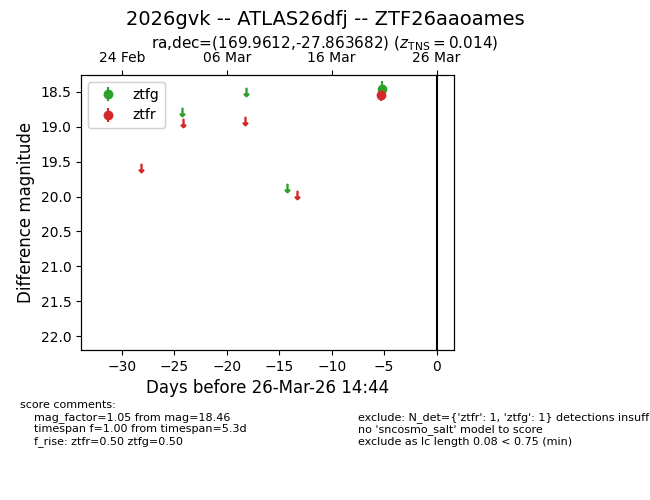
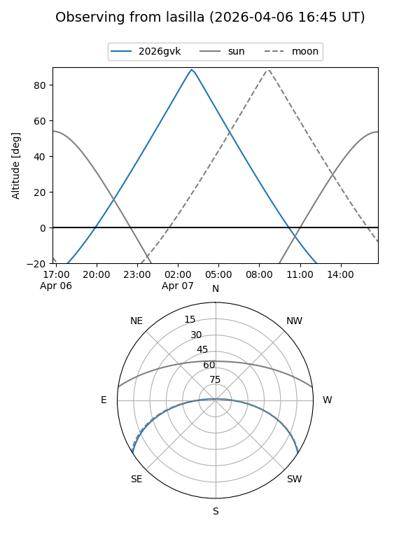
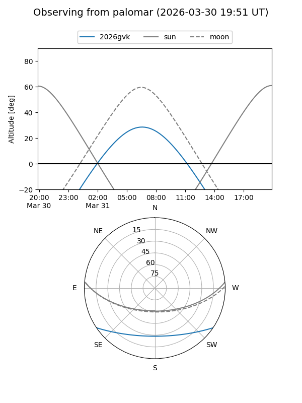
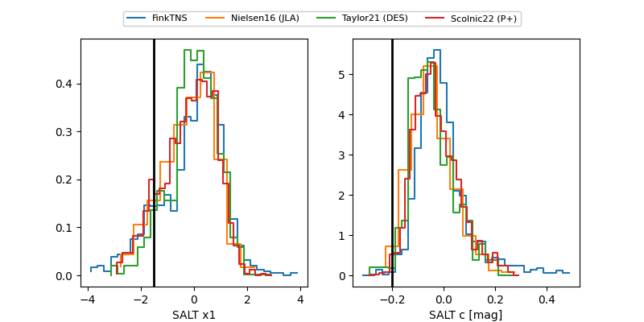

2026gvk
Target 2026gvk at 2026-03-26 14:46
Aliases and brokers:
FINK: link
Lasair: link
ALeRCE: link
TNS: link
YSE: link
alt names
ZTF26aaoames (ztf,fink_ztf)
2026gvk (tns,yse)
ATLAS26dfj (atlas)
Coordinates:
equatorial (ra, dec) = 169.9612,-27.86368
equatorial (HMS+DMS) = 11:19:50.69,-27:51:49.25
galactic (l, b) = (279.3307,+30.77642)
Flags:
confirmed ia
Photometry:
last ztfg=18.46, ztfr=18.55
1 ztfg, 1 ztfr detections
Lightcurve

Visibility


Additional plots
